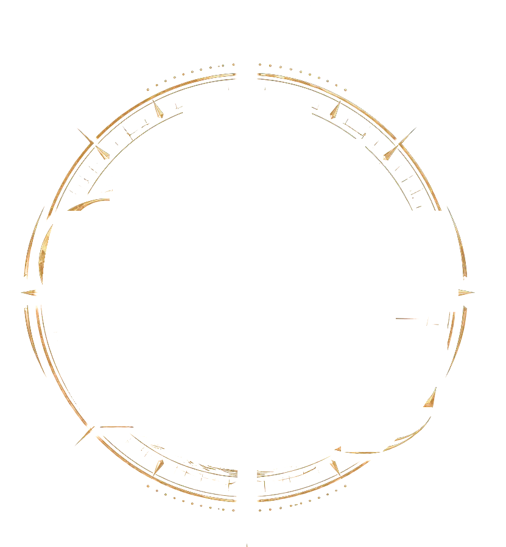
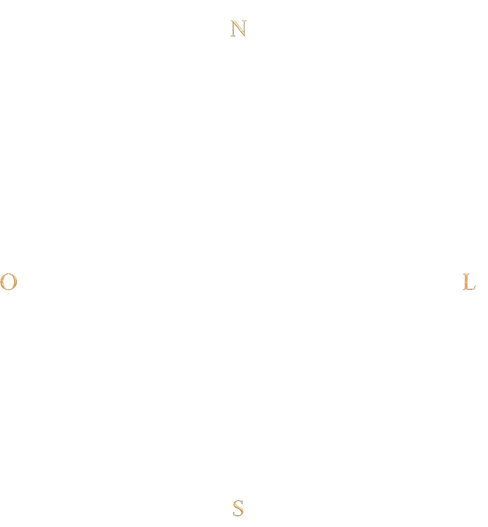
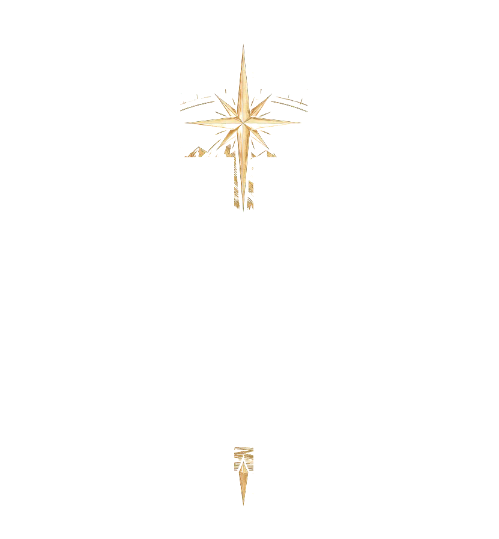
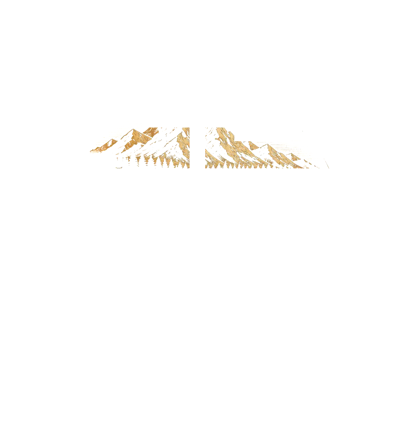
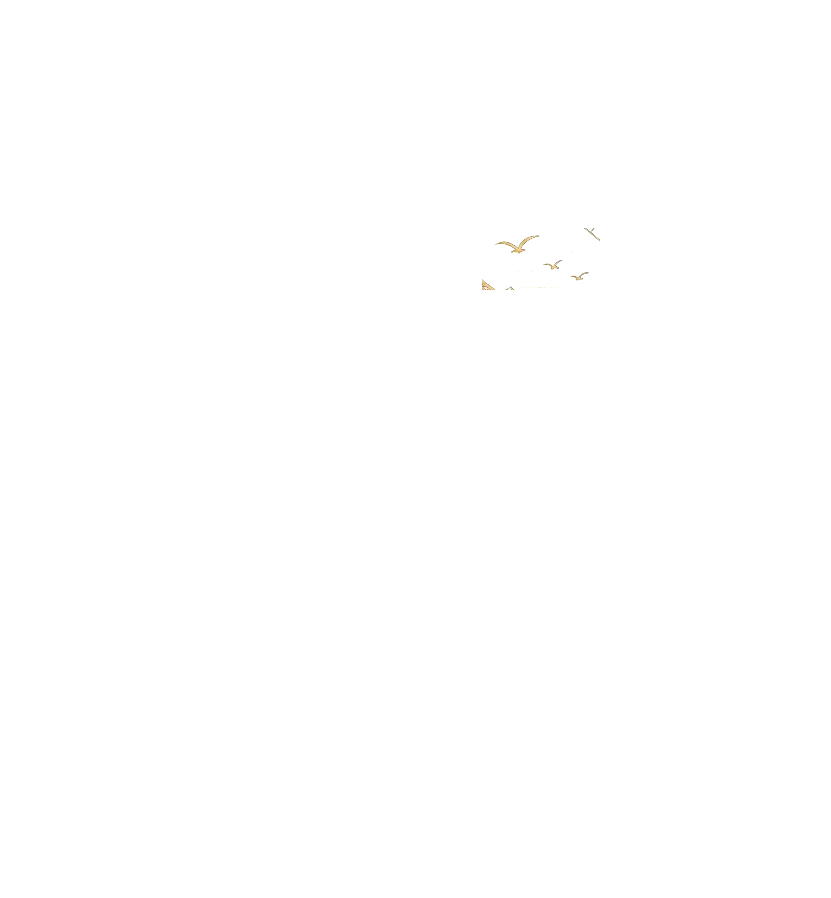
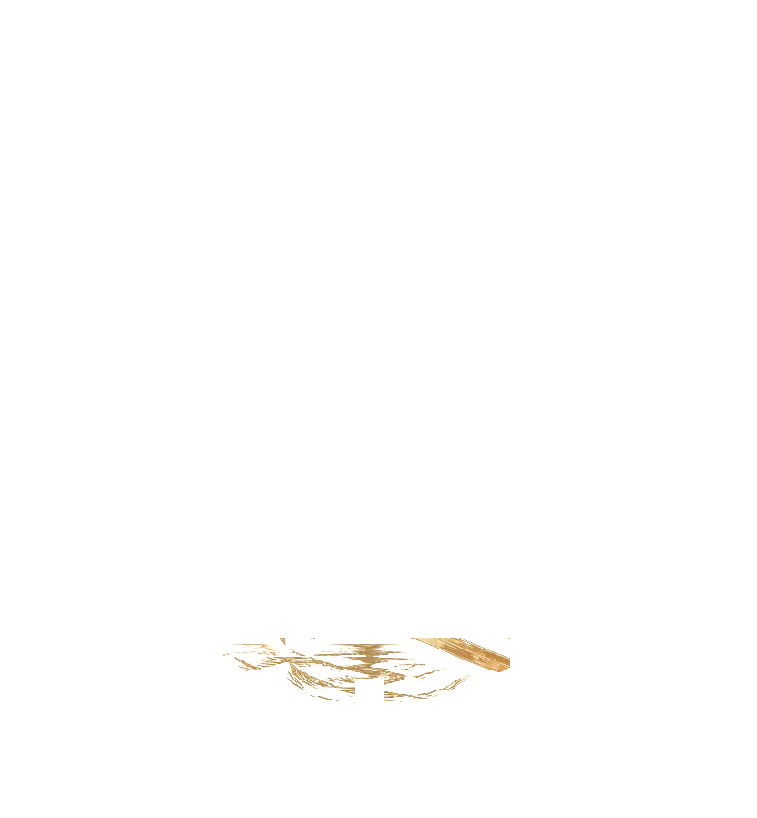
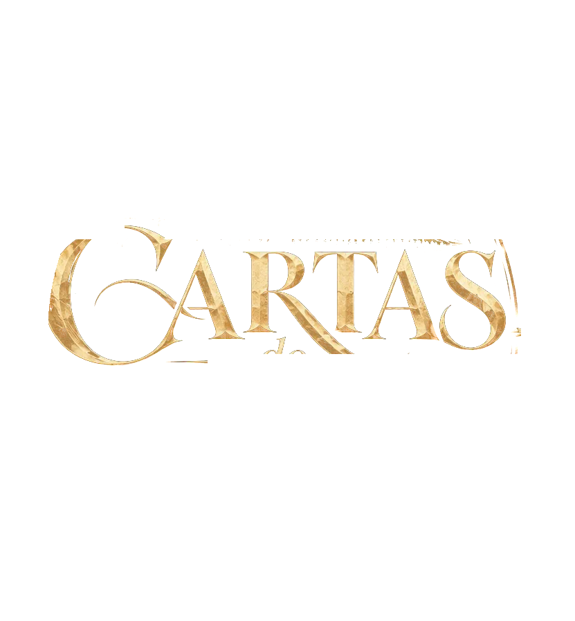
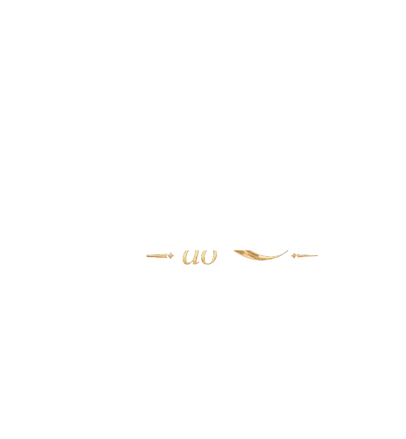

Uma jornada entre a névoa, o mar e a graça
Miqueias,


12
cartas atravessam o romance.
Correspondência lacrada
Cada uma se abre quando a leitura chega até ela.

O Atlas
A travessia
sete cartas náuticas, reveladas com a leitura
72capítulos
54aquarelas
12cartas
O Arquivo Vivo
O romance inteiro,
do prólogo ao epílogo.
ICartas com lacre
IIAtlas da travessia
IIISom para a leitura

O Arquivo Vivo
Um romance de Werik Martins
Entre no Arquivo Vivo